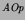
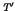

Next: Bibliographical Notes
Up: IO Refinement
Previous: IO Refinement
On page 244, the proof of Theorem 10.5.2 (Simple output refinement)
adds an output to  rather than to .
In Definition 10.5.2 (Upward IO Refinement), page 247, several things
have gone wrong, all obvious except for the first:
- should be injective;
- should be total on concrete and abstract outputs
rather than inputs;
- the antecedent of the correctness condition should be
,
i.e. should be replaced by ;
- the outer universal quantification is also over .
E.A.Boiten
2002-11-22